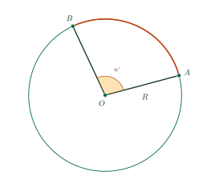
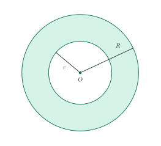

Arc Length, Sectors and AnnuliĐộ dài của cung tròn. Diện tích hình quạt tròn và hình vành khuyên
Grade 9 · Topic: CirclesLớp 9 · Chủ đề: Đường tròn
1Lesson IntroductionGiới thiệu bài học
Learning goalsMục tiêu bài học
By the end of this lesson you can:
Sau bài học này, em có thể:
use the formula for the length of an arc;
vận dụng được công thức tính độ dài cung tròn;
use the formulas for the area of a sector and of an annulus;
vận dụng được công thức tính diện tích hình quạt tròn và hình vành khuyên;
solve reverse problems (find the radius or the angle);
giải được bài toán ngược (tìm bán kính hoặc số đo cung);
solve real-life problems: garden paths, paving costs, paper fans, party hats.
giải được bài toán thực tế: lối đi quanh vườn, chi phí lát nền, quạt giấy, mũ sinh nhật.
2Mathematical VocabularyTừ vựng Toán học
circumference – the length of the whole circle, \(C=2\pi R\).
Độ dài đường tròn (chu vi) – \(C=2\pi R\).
arc length – the length of an arc of \(n^\circ\): \(l=\dfrac{\pi Rn}{180}\).
Độ dài cung \(n^\circ\): \(l=\dfrac{\pi Rn}{180}\).
sector – the region bounded by two radii and the arc between them.
Hình quạt tròn – phần hình tròn giới hạn bởi hai bán kính và cung nằm giữa chúng.
annulus – the region between two concentric circles.
Hình vành khuyên – phần nằm giữa hai đường tròn đồng tâm.
slant height – the radius of the sector becomes the slant height of the cone.
Đường sinh – bán kính hình quạt trở thành đường sinh của hình nón.
3Useful English PhrasesCụm từ tiếng Anh thường gặp
The arc represents \(\dfrac{n}{360}\) of the full circumference.
Cung chiếm \(\dfrac{n}{360}\) độ dài cả đường tròn.
The sector represents \(\dfrac{n}{360}\) of the full circle.
Hình quạt chiếm \(\dfrac{n}{360}\) diện tích cả hình tròn.
Leave your answer in terms of \(\pi\).
Để kết quả dưới dạng có chứa \(\pi\).
When a sector is rolled into a cone, its arc becomes the circumference of the base.
Khi cuộn hình quạt thành hình nón, cung trở thành đường tròn đáy.
Use \(\pi\approx3.14\).
Lấy \(\pi\approx3{,}14\).
4Prerequisite ReviewÔn tập kiến thức nền
Circle. Circumference \(C=2\pi R\); area \(S=\pi R^2\).
Hình tròn. Chu vi \(C=2\pi R\); diện tích \(S=\pi R^2\).
Lesson 14. A whole circle measures \(360^\circ\).
Bài 14. Cả đường tròn có số đo \(360^\circ\).
5TheoryLý thuyết
5.1 Arc lengthĐộ dài của cung tròn
FormulaCông thức
The circumference of \((O;\,R)\) is \(C=2\pi R\). An arc of \(n^\circ\) is \(\dfrac{n}{360}\) of the circle, so its length is
Độ dài đường tròn \((O;\,R)\) là \(C=2\pi R\). Cung \(n^\circ\) chiếm \(\dfrac{n}{360}\) đường tròn nên có độ dài

5.2 Area of a sectorDiện tích hình quạt tròn
FormulaCông thức
A sector is bounded by two radii and an arc. A sector with central angle \(n^\circ\) has area
Hình quạt tròn giới hạn bởi hai bán kính và một cung. Hình quạt có góc ở tâm \(n^\circ\) có diện tích
Both \(l\) and \(S\) are proportional to \(n\) when \(R\) is fixed.
Khi \(R\) không đổi, \(l\) và \(S\) đều tỉ lệ thuận với \(n\).
5.3 Area of an annulusDiện tích hình vành khuyên

FormulaCông thức
The annulus between two concentric circles of radii \(R\gt r\) has area
Hình vành khuyên giới hạn bởi hai đường tròn đồng tâm bán kính \(R\gt r\) có diện tích
6Worked ExamplesVí dụ có lời giải
ExampleVí dụ 1RememberingNhận biết – Using the formulasÁp dụng công thức
A circle has radius 9 cm. Find
a) its circumference;
b) the length of an arc of \(80^\circ\);
c) the area of the sector of \(80^\circ\). Leave answers in terms of \(\pi\).
Một đường tròn có bán kính 9 cm. Tính
a) độ dài đường tròn;
b) độ dài cung \(80^\circ\);
c) diện tích hình quạt tròn \(80^\circ\). Để kết quả dưới dạng có chứa \(\pi\).
Analysis: \(R=9\), \(n=80\).
Phân tích: \(R=9\), \(n=80\).
a) \(C=2\pi\cdot9=18\pi\) cm.
b) \(l=\dfrac{\pi\cdot9\cdot80}{180}=4\pi\) cm.a) \(C=2\pi\cdot9=18\pi\) cm. b) \(l=\dfrac{\pi\cdot9\cdot80}{180}=4\pi\) cm.
c) \(S=\dfrac{\pi\cdot9^2\cdot80}{360}=18\pi\) cm².
c) \(S=\dfrac{\pi\cdot9^2\cdot80}{360}=18\pi\) cm².
\(18\pi\) cm; \(4\pi\) cm; \(18\pi\) cm².
\(18\pi\) cm; \(4\pi\) cm; \(18\pi\) cm².
ExampleVí dụ 2UnderstandingThông hiểu – A sectorHình quạt tròn
A sector has radius 12 cm and central angle \(150^\circ\). Find its arc length, its area and the fraction of the whole disk it occupies.
Một hình quạt tròn có bán kính 12 cm, góc ở tâm \(150^\circ\). Tính độ dài cung, diện tích hình quạt và cho biết hình quạt chiếm bao nhiêu phần hình tròn.
Analysis: Fraction \(=\dfrac{n}{360}\).
Phân tích: Phần chiếm \(=\dfrac{n}{360}\).
\(l=\dfrac{\pi\cdot12\cdot150}{180}=10\pi\) cm; \(S=\dfrac{lR}{2}=\dfrac{10\pi\cdot12}{2}=60\pi\) cm².
\(l=\dfrac{\pi\cdot12\cdot150}{180}=10\pi\) cm; \(S=\dfrac{lR}{2}=\dfrac{10\pi\cdot12}{2}=60\pi\) cm².
Fraction: \(\dfrac{150}{360}=\dfrac{5}{12}\).
Phần chiếm: \(\dfrac{150}{360}=\dfrac{5}{12}\).
\(10\pi\) cm; \(60\pi\) cm²; \(\dfrac{5}{12}\).
\(10\pi\) cm; \(60\pi\) cm²; \(\dfrac{5}{12}\).
ExampleVí dụ 3UnderstandingThông hiểu – Reverse reasoningBài toán ngược
An arc of \(72^\circ\) has length \(8\pi\) cm. Find the radius and the area of the corresponding sector.
Một cung \(72^\circ\) có độ dài \(8\pi\) cm. Tính bán kính đường tròn và diện tích hình quạt tương ứng.
Analysis: Solve \(\dfrac{\pi R\cdot72}{180}=8\pi\).
Phân tích: Giải \(\dfrac{\pi R\cdot72}{180}=8\pi\).
\(\dfrac{\pi R\cdot72}{180}=8\pi\Rightarrow R=\dfrac{180\cdot8}{72}=20\) cm.
\(\dfrac{\pi R\cdot72}{180}=8\pi\Rightarrow R=\dfrac{180\cdot8}{72}=20\) cm.
\(S=\dfrac{lR}{2}=\dfrac{8\pi\cdot20}{2}=80\pi\) cm².
\(S=\dfrac{lR}{2}=\dfrac{8\pi\cdot20}{2}=80\pi\) cm².
\(R=20\) cm; \(S=80\pi\) cm².
\(R=20\) cm; \(S=80\pi\) cm².
ExampleVí dụ 4Basic applicationVận dụng thấp – A path around a gardenLối đi quanh vườn
A circular garden has radius 5 m. A path 1.5 m wide is built around the outside. Find the area of the path and the paving cost at 240,000 dong per m² (use \(\pi\approx3.14\)).
Một vườn hoa hình tròn bán kính 5 m. Người ta làm lối đi rộng 1,5 m bao quanh bên ngoài vườn. Tính diện tích lối đi và chi phí lát với giá 240 000 đồng/m² (lấy \(\pi\approx3{,}14\)).
Analysis: The path is an annulus.
Phân tích: Lối đi là một hình vành khuyên.
Outer radius \(5+1.5=6.5\) m. \(S=3.14\left(6.5^2-5^2\right)=3.14\cdot17.25=54.165\) m².
Bán kính ngoài \(5+1{,}5=6{,}5\) m. \(S=3{,}14\left(6{,}5^2-5^2\right)=3{,}14\cdot17{,}25=54{,}165\) m².
Cost \(=54.165\cdot240\,000=12\,999\,600\) dong, about 13 million dong.
Chi phí \(=54{,}165\cdot240\,000=12\,999\,600\) đồng, khoảng 13 triệu đồng.
About 54.17 m²; about 13 million dong.
Khoảng 54,17 m²; khoảng 13 triệu đồng.
ExampleVí dụ 5ApplicationVận dụng – From a sector to a party hatTừ hình quạt đến chiếc mũ sinh nhật
A party hat is made by rolling a sector of radius 18 cm and central angle \(120^\circ\) (no overlap).
a) Find the length of the curved edge.
b) It becomes the circumference of the base: find the base radius \(r\).
c) Find the area of the sector. What does it represent on the hat?
Một chiếc mũ sinh nhật được làm bằng cách cuộn hình quạt bán kính 18 cm, góc ở tâm \(120^\circ\) (không chồng mép).
a) Tính độ dài mép cong.
b) Mép cong trở thành đường tròn đáy: tính bán kính đáy \(r\).
c) Tính diện tích hình quạt. Diện tích này ứng với phần nào của chiếc mũ?
Analysis: Sector arc → base circumference; sector radius → slant height.
Phân tích: Cung của hình quạt → đường tròn đáy; bán kính hình quạt → đường sinh.
a) \(l=\dfrac{\pi\cdot18\cdot120}{180}=12\pi\) cm.
b) \(2\pi r=12\pi\Rightarrow r=6\) cm.a) \(l=\dfrac{\pi\cdot18\cdot120}{180}=12\pi\) cm. b) \(2\pi r=12\pi\Rightarrow r=6\) cm.
c) \(S=\dfrac{\pi\cdot18^2\cdot120}{360}=108\pi\) cm²: this is the lateral surface area of the cone (the paper of the hat).
c) \(S=\dfrac{\pi\cdot18^2\cdot120}{360}=108\pi\) cm²: đó là diện tích xung quanh của hình nón (phần giấy làm mũ).
\(12\pi\) cm; \(r=6\) cm; \(108\pi\) cm².
\(12\pi\) cm; \(r=6\) cm; \(108\pi\) cm².
7PracticeBài tập luyện tập
A. Multiple ChoiceA. Trắc nghiệm nhiều lựa chọn
Find the length of an arc of \(120^\circ\) on a circle of radius 7 cm.
Tính độ dài cung \(120^\circ\) của đường tròn bán kính 7 cm.
Answer: d. \(l=\dfrac{\pi Rn}{180}=\dfrac{\pi\cdot7\cdot120}{180}=\dfrac{14}{3}\pi\) cm.
Đáp án d. \(l=\dfrac{\pi Rn}{180}=\dfrac{\pi\cdot7\cdot120}{180}=\dfrac{14}{3}\pi\) cm.
Find the area of a sector with radius 3 cm and central angle \(40^\circ\).
Tính diện tích hình quạt tròn bán kính 3 cm, góc ở tâm \(40^\circ\).
Answer: c. \(S=\dfrac{\pi R^2n}{360}=\dfrac{\pi\cdot3^2\cdot40}{360}=\pi\) cm².
Đáp án c. \(S=\dfrac{\pi R^2n}{360}=\dfrac{\pi\cdot3^2\cdot40}{360}=\pi\) cm².
Two concentric circles have radii 15 cm and 9 cm. Find the area of the annulus between them.
Hai đường tròn đồng tâm có bán kính 15 cm và 9 cm. Tính diện tích hình vành khuyên giới hạn bởi chúng.
Answer: a. \(S=\pi\left(R^2-r^2\right)=\pi\left(15^2-9^2\right)=144\pi\) cm².
Đáp án a. \(S=\pi\left(R^2-r^2\right)=\pi\left(15^2-9^2\right)=144\pi\) cm².
B. True or FalseB. Đúng hoặc sai
An arc of \(180^\circ\) on a circle of radius 16 cm has length \(16\pi\) cm.
Cung \(180^\circ\) của đường tròn bán kính 16 cm có độ dài \(16\pi\) cm.
True. \(l=\dfrac{\pi\cdot16\cdot180}{180}=16\pi\) cm.
Đúng. \(l=\dfrac{\pi\cdot16\cdot180}{180}=16\pi\) cm.
If the radius of a sector (radius 7 cm, angle \(90^\circ\)) is doubled and the angle is kept, its area is doubled.
Nếu tăng gấp đôi bán kính của một hình quạt (bán kính 7 cm, góc \(90^\circ\)) và giữ nguyên góc thì diện tích hình quạt tăng gấp đôi.
False. \(S=\dfrac{\pi R^2n}{360}\) is proportional to \(n\), but it grows like \(R^2\): doubling \(R\) multiplies \(S\) by 4.
Sai. \(S=\dfrac{\pi R^2n}{360}\) tỉ lệ thuận với \(n\) nhưng tỉ lệ với \(R^2\) (gấp đôi \(R\) thì \(S\) gấp 4).
C. Short AnswerC. Trả lời ngắn
Find the length of an arc of \(119^\circ\) on a circle of radius 5 cm, rounded to the nearest tenth (use the \(\pi\) key).
Tính độ dài cung \(119^\circ\) của đường tròn bán kính 5 cm (làm tròn đến hàng phần mười, dùng phím \(\pi\)).
Enter a decimal number (e.g. 7.7).
Nhập một số thập phân (ví dụ 7,7).
Answer: 10.4. \(l=\dfrac{\pi\cdot5\cdot119}{180}\approx 10.4\) cm.
Đáp số: 10,4. \(l=\dfrac{\pi\cdot5\cdot119}{180}\approx 10{,}4\) cm.
An arc of \(100^\circ\) has length \(\dfrac{5}{3}\pi\) cm. Find the radius of the circle (cm).
Một cung \(100^\circ\) có độ dài \(\dfrac{5}{3}\pi\) cm. Tính bán kính đường tròn (cm).
Enter a number.
Nhập một số.
Answer: 3. \(R=\dfrac{180\,l}{\pi n}=\dfrac{180\cdot\dfrac{5}{3}\pi}{\pi\cdot100}=3\).
Đáp số: 3. \(R=\dfrac{180\,l}{\pi n}=\dfrac{180\cdot\dfrac{5}{3}\pi}{\pi\cdot100}=3\).
D1. Self-practice – RememberingD1. Tự luyện – Mức Nhận biết
Which formula gives the arc length \(l\) of an arc of \(n^\circ\) (radius \(R\))?
Công thức nào cho độ dài \(l\) của cung \(n^\circ\) (bán kính \(R\))?
Answer: a. Arc: \(\dfrac{\pi Rn}{180}\); sector: \(\dfrac{\pi R^2n}{360}\); annulus: \(\pi(R^2-r^2)\).
Đáp án a. Cung: \(\dfrac{\pi Rn}{180}\); hình quạt: \(\dfrac{\pi R^2n}{360}\); vành khuyên: \(\pi(R^2-r^2)\).
Find the circumference of a circle with radius 17 cm.
Tính chu vi (độ dài đường tròn) của đường tròn bán kính 17 cm.
Answer: d. \(C=2\pi R=34\pi\) cm.
Đáp án d. \(C=2\pi R=34\pi\) cm.
A sector with central angle \(20^\circ\) is what fraction of the whole disk?
Hình quạt có góc ở tâm \(20^\circ\) chiếm bao nhiêu phần của cả hình tròn?
Answer: a. \(\dfrac{20}{360}=\dfrac{1}{18}\).
Đáp án a. \(\dfrac{20}{360}=\dfrac{1}{18}\).
D2. Self-practice – UnderstandingD2. Tự luyện – Mức Thông hiểu
A sector has radius 13 cm and arc length \(\dfrac{26}{9}\pi\) cm. Find its area.
Một hình quạt có bán kính 13 cm và độ dài cung \(\dfrac{26}{9}\pi\) cm. Tính diện tích hình quạt.
Answer: c. \(S=\dfrac{lR}{2}=\dfrac{\dfrac{26}{9}\pi\cdot13}{2}=\dfrac{169}{9}\pi\) cm².
Đáp án c. \(S=\dfrac{lR}{2}=\dfrac{\dfrac{26}{9}\pi\cdot13}{2}=\dfrac{169}{9}\pi\) cm².
A circle has diameter 6 cm. Find the length of an arc of \(150^\circ\).
Một đường tròn có đường kính 6 cm. Tính độ dài cung \(150^\circ\).
Answer: c. \(R=3\); \(l=\dfrac{\pi\cdot3\cdot150}{180}=\dfrac{5}{2}\pi\) cm.
Đáp án c. \(R=3\); \(l=\dfrac{\pi\cdot3\cdot150}{180}=\dfrac{5}{2}\pi\) cm.
A disk of radius 10 cm is cut along radii; the cut piece has central angle \(270^\circ\). Find its area.
Cắt một hình tròn bán kính 10 cm theo hai bán kính được một hình quạt có góc ở tâm \(270^\circ\). Tính diện tích hình quạt đó.
Answer: a. \(S=\dfrac{270}{360}\cdot\pi\cdot10^2=75\pi\) cm².
Đáp án a. \(S=\dfrac{270}{360}\cdot\pi\cdot10^2=75\pi\) cm².
D3. Self-practice – Basic applicationD3. Tự luyện – Mức Vận dụng thấp
On a circle of radius 27 cm, an arc has length \(\dfrac{9}{2}\pi\) cm. Find its measure.
Trên đường tròn bán kính 27 cm, một cung có độ dài \(\dfrac{9}{2}\pi\) cm. Tính số đo cung đó.
Answer: c. \(n=\dfrac{180\,l}{\pi R}=\dfrac{180\cdot\dfrac{9}{2}\pi}{\pi\cdot27}=30\).
Đáp án c. \(n=\dfrac{180\,l}{\pi R}=\dfrac{180\cdot\dfrac{9}{2}\pi}{\pi\cdot27}=30\).
A sector with central angle \(90^\circ\) has area \(16\pi\) cm². Find its radius.
Một hình quạt có góc ở tâm \(90^\circ\) và diện tích \(16\pi\) cm². Tính bán kính hình quạt.
Answer: c. \(R^2=\dfrac{360\,S}{\pi n}=64\Rightarrow R=8\) cm.
Đáp án c. \(R^2=\dfrac{360\,S}{\pi n}=64\Rightarrow R=8\) cm.
A circular garden has radius 11 m. A path 2 m wide is built all around its outside. Find the area of the path (use \(\pi\approx3.14\)).
Một vườn hoa hình tròn bán kính 11 m. Người ta làm một lối đi rộng 2 m bao quanh bên ngoài vườn. Tính diện tích lối đi (lấy \(\pi\approx3{,}14\)).
Answer: a. Outer radius \(13\) m; \(S=3.14\left(13^2-11^2\right)=150.72\) m².
Đáp án a. Bán kính ngoài \(13\) m; \(S=3{,}14\left(13^2-11^2\right)=150{,}72\) m².
D4. Self-practice – Advanced applicationD4. Tự luyện – Mức Vận dụng
A party hat is made by rolling a sector of radius 18 cm and central angle \(72^\circ\) into a cone (no overlap). Find the radius of the base of the cone.
Một chiếc mũ sinh nhật được làm bằng cách cuộn hình quạt bán kính 18 cm, góc ở tâm \(72^\circ\) thành hình nón (không chồng mép). Tính bán kính đáy của hình nón.
Answer: d. Arc length \(=\dfrac{\pi\cdot18\cdot72}{180}=2\pi r\Rightarrow r=\dfrac{18}{5}\) cm.
Đáp án d. Độ dài cung \(=\dfrac{\pi\cdot18\cdot72}{180}=2\pi r\Rightarrow r=\dfrac{18}{5}\) cm.
A circular pond of radius 10 m is surrounded by a paved ring 1.5 m wide. Paving costs 200 thousand dong per m². How much does the paving cost (use \(\pi\approx3.14\), in thousand dong)?
Quanh một hồ nước hình tròn bán kính 10 m người ta lát một vành đá rộng 1,5 m. Chi phí lát là 200 nghìn đồng/m². Tính chi phí lát (lấy \(\pi\approx3{,}14\), đơn vị nghìn đồng).
Answer: a. Area \(=3.14\left(11.5^2-10^2\right)=101.265\) m²; cost \(=101.265\cdot200=20253\) thousand dong.
Đáp án a. Diện tích \(=3{,}14\left(11{,}5^2-10^2\right)=101{,}265\) m²; chi phí \(=101{,}265\cdot200=20253\) nghìn đồng.
A paper fan is a sector of radius 23 cm and central angle \(135^\circ\); paper covers only the part outside the sector of radius 7 cm with the same center. Find the paper area.
Một chiếc quạt giấy có dạng hình quạt bán kính 23 cm, góc ở tâm \(135^\circ\); giấy chỉ dán phần nằm ngoài hình quạt cùng tâm bán kính 7 cm. Tính diện tích phần giấy.
Answer: d. \(S=\dfrac{\pi\left(23^2-7^2\right)\cdot135}{360}=180\pi\) cm².
Đáp án d. \(S=\dfrac{\pi\left(23^2-7^2\right)\cdot135}{360}=180\pi\) cm².
A. Multiple ChoiceA. Trắc nghiệm nhiều lựa chọn
Find the length of an arc of \(300^\circ\) on a circle of radius 6 cm.
Tính độ dài cung \(300^\circ\) của đường tròn bán kính 6 cm.
Answer: d. \(l=\dfrac{\pi Rn}{180}=\dfrac{\pi\cdot6\cdot300}{180}=10\pi\) cm.
Đáp án d. \(l=\dfrac{\pi Rn}{180}=\dfrac{\pi\cdot6\cdot300}{180}=10\pi\) cm.
Find the area of a sector with radius 13 cm and central angle \(240^\circ\).
Tính diện tích hình quạt tròn bán kính 13 cm, góc ở tâm \(240^\circ\).
Answer: d. \(S=\dfrac{\pi R^2n}{360}=\dfrac{\pi\cdot13^2\cdot240}{360}=\dfrac{338}{3}\pi\) cm².
Đáp án d. \(S=\dfrac{\pi R^2n}{360}=\dfrac{\pi\cdot13^2\cdot240}{360}=\dfrac{338}{3}\pi\) cm².
Two concentric circles have radii 10 cm and 5 cm. Find the area of the annulus between them.
Hai đường tròn đồng tâm có bán kính 10 cm và 5 cm. Tính diện tích hình vành khuyên giới hạn bởi chúng.
Answer: b. \(S=\pi\left(R^2-r^2\right)=\pi\left(10^2-5^2\right)=75\pi\) cm².
Đáp án b. \(S=\pi\left(R^2-r^2\right)=\pi\left(10^2-5^2\right)=75\pi\) cm².
B. True or FalseB. Đúng hoặc sai
An arc of \(45^\circ\) on a circle of radius 13 cm has length \(\dfrac{13}{8}\pi\) cm.
Cung \(45^\circ\) của đường tròn bán kính 13 cm có độ dài \(\dfrac{13}{8}\pi\) cm.
False. \(l=\dfrac{\pi\cdot13\cdot45}{180}=\dfrac{13}{4}\pi\) cm.
Sai. \(l=\dfrac{\pi\cdot13\cdot45}{180}=\dfrac{13}{4}\pi\) cm.
If the radius of a sector (radius 10 cm, angle \(40^\circ\)) is doubled and the angle is kept, its area is doubled.
Nếu tăng gấp đôi bán kính của một hình quạt (bán kính 10 cm, góc \(40^\circ\)) và giữ nguyên góc thì diện tích hình quạt tăng gấp đôi.
False. \(S=\dfrac{\pi R^2n}{360}\) is proportional to \(n\), but it grows like \(R^2\): doubling \(R\) multiplies \(S\) by 4.
Sai. \(S=\dfrac{\pi R^2n}{360}\) tỉ lệ thuận với \(n\) nhưng tỉ lệ với \(R^2\) (gấp đôi \(R\) thì \(S\) gấp 4).
C. Short AnswerC. Trả lời ngắn
Find the length of an arc of \(173^\circ\) on a circle of radius 14 cm, rounded to the nearest tenth (use the \(\pi\) key).
Tính độ dài cung \(173^\circ\) của đường tròn bán kính 14 cm (làm tròn đến hàng phần mười, dùng phím \(\pi\)).
Enter a decimal number (e.g. 7.7).
Nhập một số thập phân (ví dụ 7,7).
Answer: 42.3. \(l=\dfrac{\pi\cdot14\cdot173}{180}\approx 42.3\) cm.
Đáp số: 42,3. \(l=\dfrac{\pi\cdot14\cdot173}{180}\approx 42{,}3\) cm.
An arc of \(30^\circ\) has length \(\dfrac{7}{6}\pi\) cm. Find the radius of the circle (cm).
Một cung \(30^\circ\) có độ dài \(\dfrac{7}{6}\pi\) cm. Tính bán kính đường tròn (cm).
Enter a number.
Nhập một số.
Answer: 7. \(R=\dfrac{180\,l}{\pi n}=\dfrac{180\cdot\dfrac{7}{6}\pi}{\pi\cdot30}=7\).
Đáp số: 7. \(R=\dfrac{180\,l}{\pi n}=\dfrac{180\cdot\dfrac{7}{6}\pi}{\pi\cdot30}=7\).
D1. Self-practice – RememberingD1. Tự luyện – Mức Nhận biết
Which formula gives the area of a sector with central angle \(n^\circ\) (radius \(R\))?
Công thức nào cho diện tích hình quạt tròn có góc ở tâm \(n^\circ\) (bán kính \(R\))?
Answer: a. Arc: \(\dfrac{\pi Rn}{180}\); sector: \(\dfrac{\pi R^2n}{360}\); annulus: \(\pi(R^2-r^2)\).
Đáp án a. Cung: \(\dfrac{\pi Rn}{180}\); hình quạt: \(\dfrac{\pi R^2n}{360}\); vành khuyên: \(\pi(R^2-r^2)\).
Find the circumference of a circle with radius 35 cm.
Tính chu vi (độ dài đường tròn) của đường tròn bán kính 35 cm.
Answer: a. \(C=2\pi R=70\pi\) cm.
Đáp án a. \(C=2\pi R=70\pi\) cm.
A sector with central angle \(144^\circ\) is what fraction of the whole disk?
Hình quạt có góc ở tâm \(144^\circ\) chiếm bao nhiêu phần của cả hình tròn?
Answer: b. \(\dfrac{144}{360}=\dfrac{2}{5}\).
Đáp án b. \(\dfrac{144}{360}=\dfrac{2}{5}\).
D2. Self-practice – UnderstandingD2. Tự luyện – Mức Thông hiểu
A sector has radius 3 cm and arc length \(\dfrac{9}{2}\pi\) cm. Find its area.
Một hình quạt có bán kính 3 cm và độ dài cung \(\dfrac{9}{2}\pi\) cm. Tính diện tích hình quạt.
Answer: d. \(S=\dfrac{lR}{2}=\dfrac{\dfrac{9}{2}\pi\cdot3}{2}=\dfrac{27}{4}\pi\) cm².
Đáp án d. \(S=\dfrac{lR}{2}=\dfrac{\dfrac{9}{2}\pi\cdot3}{2}=\dfrac{27}{4}\pi\) cm².
A circle has diameter 34 cm. Find the length of an arc of \(240^\circ\).
Một đường tròn có đường kính 34 cm. Tính độ dài cung \(240^\circ\).
Answer: d. \(R=17\); \(l=\dfrac{\pi\cdot17\cdot240}{180}=\dfrac{68}{3}\pi\) cm.
Đáp án d. \(R=17\); \(l=\dfrac{\pi\cdot17\cdot240}{180}=\dfrac{68}{3}\pi\) cm.
A disk of radius 5 cm is cut along radii; the cut piece has central angle \(180^\circ\). Find its area.
Cắt một hình tròn bán kính 5 cm theo hai bán kính được một hình quạt có góc ở tâm \(180^\circ\). Tính diện tích hình quạt đó.
Answer: d. \(S=\dfrac{180}{360}\cdot\pi\cdot5^2=\dfrac{25}{2}\pi\) cm².
Đáp án d. \(S=\dfrac{180}{360}\cdot\pi\cdot5^2=\dfrac{25}{2}\pi\) cm².
D3. Self-practice – Basic applicationD3. Tự luyện – Mức Vận dụng thấp
On a circle of radius 29 cm, an arc has length \(\dfrac{116}{9}\pi\) cm. Find its measure.
Trên đường tròn bán kính 29 cm, một cung có độ dài \(\dfrac{116}{9}\pi\) cm. Tính số đo cung đó.
Answer: a. \(n=\dfrac{180\,l}{\pi R}=\dfrac{180\cdot\dfrac{116}{9}\pi}{\pi\cdot29}=80\).
Đáp án a. \(n=\dfrac{180\,l}{\pi R}=\dfrac{180\cdot\dfrac{116}{9}\pi}{\pi\cdot29}=80\).
A sector with central angle \(120^\circ\) has area \(\dfrac{121}{3}\pi\) cm². Find its radius.
Một hình quạt có góc ở tâm \(120^\circ\) và diện tích \(\dfrac{121}{3}\pi\) cm². Tính bán kính hình quạt.
Answer: d. \(R^2=\dfrac{360\,S}{\pi n}=121\Rightarrow R=11\) cm.
Đáp án d. \(R^2=\dfrac{360\,S}{\pi n}=121\Rightarrow R=11\) cm.
A circular garden has radius 7.5 m. A path 2 m wide is built all around its outside. Find the area of the path (use \(\pi\approx3.14\)).
Một vườn hoa hình tròn bán kính 7,5 m. Người ta làm một lối đi rộng 2 m bao quanh bên ngoài vườn. Tính diện tích lối đi (lấy \(\pi\approx3{,}14\)).
Answer: b. Outer radius \(9.5\) m; \(S=3.14\left(9.5^2-7.5^2\right)=106.76\) m².
Đáp án b. Bán kính ngoài \(9{,}5\) m; \(S=3{,}14\left(9{,}5^2-7{,}5^2\right)=106{,}76\) m².
D4. Self-practice – Advanced applicationD4. Tự luyện – Mức Vận dụng
A party hat is made by rolling a sector of radius 26 cm and central angle \(144^\circ\) into a cone (no overlap). Find the radius of the base of the cone.
Một chiếc mũ sinh nhật được làm bằng cách cuộn hình quạt bán kính 26 cm, góc ở tâm \(144^\circ\) thành hình nón (không chồng mép). Tính bán kính đáy của hình nón.
Answer: b. Arc length \(=\dfrac{\pi\cdot26\cdot144}{180}=2\pi r\Rightarrow r=\dfrac{52}{5}\) cm.
Đáp án b. Độ dài cung \(=\dfrac{\pi\cdot26\cdot144}{180}=2\pi r\Rightarrow r=\dfrac{52}{5}\) cm.
A circular pond of radius 3 m is surrounded by a paved ring 1.5 m wide. Paving costs 240 thousand dong per m². How much does the paving cost (use \(\pi\approx3.14\), in thousand dong)?
Quanh một hồ nước hình tròn bán kính 3 m người ta lát một vành đá rộng 1,5 m. Chi phí lát là 240 nghìn đồng/m². Tính chi phí lát (lấy \(\pi\approx3{,}14\), đơn vị nghìn đồng).
Answer: c. Area \(=3.14\left(4.5^2-3^2\right)=35.325\) m²; cost \(=35.325\cdot240=8478\) thousand dong.
Đáp án c. Diện tích \(=3{,}14\left(4{,}5^2-3^2\right)=35{,}325\) m²; chi phí \(=35{,}325\cdot240=8478\) nghìn đồng.
A paper fan is a sector of radius 18 cm and central angle \(90^\circ\); paper covers only the part outside the sector of radius 8 cm with the same center. Find the paper area.
Một chiếc quạt giấy có dạng hình quạt bán kính 18 cm, góc ở tâm \(90^\circ\); giấy chỉ dán phần nằm ngoài hình quạt cùng tâm bán kính 8 cm. Tính diện tích phần giấy.
Answer: d. \(S=\dfrac{\pi\left(18^2-8^2\right)\cdot90}{360}=65\pi\) cm².
Đáp án d. \(S=\dfrac{\pi\left(18^2-8^2\right)\cdot90}{360}=65\pi\) cm².
A. Multiple ChoiceA. Trắc nghiệm nhiều lựa chọn
Find the length of an arc of \(210^\circ\) on a circle of radius 12 cm.
Tính độ dài cung \(210^\circ\) của đường tròn bán kính 12 cm.
Answer: c. \(l=\dfrac{\pi Rn}{180}=\dfrac{\pi\cdot12\cdot210}{180}=14\pi\) cm.
Đáp án c. \(l=\dfrac{\pi Rn}{180}=\dfrac{\pi\cdot12\cdot210}{180}=14\pi\) cm.
Find the area of a sector with radius 8 cm and central angle \(180^\circ\).
Tính diện tích hình quạt tròn bán kính 8 cm, góc ở tâm \(180^\circ\).
Answer: d. \(S=\dfrac{\pi R^2n}{360}=\dfrac{\pi\cdot8^2\cdot180}{360}=32\pi\) cm².
Đáp án d. \(S=\dfrac{\pi R^2n}{360}=\dfrac{\pi\cdot8^2\cdot180}{360}=32\pi\) cm².
Two concentric circles have radii 17 cm and 11 cm. Find the area of the annulus between them.
Hai đường tròn đồng tâm có bán kính 17 cm và 11 cm. Tính diện tích hình vành khuyên giới hạn bởi chúng.
Answer: c. \(S=\pi\left(R^2-r^2\right)=\pi\left(17^2-11^2\right)=168\pi\) cm².
Đáp án c. \(S=\pi\left(R^2-r^2\right)=\pi\left(17^2-11^2\right)=168\pi\) cm².
B. True or FalseB. Đúng hoặc sai
An arc of \(36^\circ\) on a circle of radius 11 cm has length \(\dfrac{11}{10}\pi\) cm.
Cung \(36^\circ\) của đường tròn bán kính 11 cm có độ dài \(\dfrac{11}{10}\pi\) cm.
False. \(l=\dfrac{\pi\cdot11\cdot36}{180}=\dfrac{11}{5}\pi\) cm.
Sai. \(l=\dfrac{\pi\cdot11\cdot36}{180}=\dfrac{11}{5}\pi\) cm.
If the central angle of a sector (radius 10 cm, angle \(120^\circ\)) is doubled and the radius is kept, its area is doubled.
Nếu tăng gấp đôi góc ở tâm của một hình quạt (bán kính 10 cm, góc \(120^\circ\)) và giữ nguyên bán kính thì diện tích hình quạt tăng gấp đôi.
True. \(S=\dfrac{\pi R^2n}{360}\) is proportional to \(n\), but it grows like \(R^2\): doubling \(R\) multiplies \(S\) by 4.
Đúng. \(S=\dfrac{\pi R^2n}{360}\) tỉ lệ thuận với \(n\) nhưng tỉ lệ với \(R^2\) (gấp đôi \(R\) thì \(S\) gấp 4).
C. Short AnswerC. Trả lời ngắn
Find the length of an arc of \(98^\circ\) on a circle of radius 19 cm, rounded to the nearest tenth (use the \(\pi\) key).
Tính độ dài cung \(98^\circ\) của đường tròn bán kính 19 cm (làm tròn đến hàng phần mười, dùng phím \(\pi\)).
Enter a decimal number (e.g. 7.7).
Nhập một số thập phân (ví dụ 7,7).
Answer: 32.5. \(l=\dfrac{\pi\cdot19\cdot98}{180}\approx 32.5\) cm.
Đáp số: 32,5. \(l=\dfrac{\pi\cdot19\cdot98}{180}\approx 32{,}5\) cm.
An arc of \(160^\circ\) has length \(\dfrac{16}{9}\pi\) cm. Find the radius of the circle (cm).
Một cung \(160^\circ\) có độ dài \(\dfrac{16}{9}\pi\) cm. Tính bán kính đường tròn (cm).
Enter a number.
Nhập một số.
Answer: 2. \(R=\dfrac{180\,l}{\pi n}=\dfrac{180\cdot\dfrac{16}{9}\pi}{\pi\cdot160}=2\).
Đáp số: 2. \(R=\dfrac{180\,l}{\pi n}=\dfrac{180\cdot\dfrac{16}{9}\pi}{\pi\cdot160}=2\).
D1. Self-practice – RememberingD1. Tự luyện – Mức Nhận biết
Which formula gives the area of the annulus between circles of radii \(R\gt r\) (radius \(R\))?
Công thức nào cho diện tích hình vành khuyên giới hạn bởi hai đường tròn bán kính \(R\gt r\) (bán kính \(R\))?
Answer: d. Arc: \(\dfrac{\pi Rn}{180}\); sector: \(\dfrac{\pi R^2n}{360}\); annulus: \(\pi(R^2-r^2)\).
Đáp án d. Cung: \(\dfrac{\pi Rn}{180}\); hình quạt: \(\dfrac{\pi R^2n}{360}\); vành khuyên: \(\pi(R^2-r^2)\).
Find the circumference of a circle with radius 12 cm.
Tính chu vi (độ dài đường tròn) của đường tròn bán kính 12 cm.
Answer: c. \(C=2\pi R=24\pi\) cm.
Đáp án c. \(C=2\pi R=24\pi\) cm.
A sector with central angle \(270^\circ\) is what fraction of the whole disk?
Hình quạt có góc ở tâm \(270^\circ\) chiếm bao nhiêu phần của cả hình tròn?
Answer: a. \(\dfrac{270}{360}=\dfrac{3}{4}\).
Đáp án a. \(\dfrac{270}{360}=\dfrac{3}{4}\).
D2. Self-practice – UnderstandingD2. Tự luyện – Mức Thông hiểu
A sector has radius 9 cm and arc length \(12\pi\) cm. Find its area.
Một hình quạt có bán kính 9 cm và độ dài cung \(12\pi\) cm. Tính diện tích hình quạt.
Answer: d. \(S=\dfrac{lR}{2}=\dfrac{12\pi\cdot9}{2}=54\pi\) cm².
Đáp án d. \(S=\dfrac{lR}{2}=\dfrac{12\pi\cdot9}{2}=54\pi\) cm².
A circle has diameter 4 cm. Find the length of an arc of \(80^\circ\).
Một đường tròn có đường kính 4 cm. Tính độ dài cung \(80^\circ\).
Answer: d. \(R=2\); \(l=\dfrac{\pi\cdot2\cdot80}{180}=\dfrac{8}{9}\pi\) cm.
Đáp án d. \(R=2\); \(l=\dfrac{\pi\cdot2\cdot80}{180}=\dfrac{8}{9}\pi\) cm.
A disk of radius 11 cm is cut along radii; the cut piece has central angle \(90^\circ\). Find its area.
Cắt một hình tròn bán kính 11 cm theo hai bán kính được một hình quạt có góc ở tâm \(90^\circ\). Tính diện tích hình quạt đó.
Answer: d. \(S=\dfrac{90}{360}\cdot\pi\cdot11^2=\dfrac{121}{4}\pi\) cm².
Đáp án d. \(S=\dfrac{90}{360}\cdot\pi\cdot11^2=\dfrac{121}{4}\pi\) cm².
D3. Self-practice – Basic applicationD3. Tự luyện – Mức Vận dụng thấp
On a circle of radius 18 cm, an arc has length \(10\pi\) cm. Find its measure.
Trên đường tròn bán kính 18 cm, một cung có độ dài \(10\pi\) cm. Tính số đo cung đó.
Answer: b. \(n=\dfrac{180\,l}{\pi R}=\dfrac{180\cdot10\pi}{\pi\cdot18}=100\).
Đáp án b. \(n=\dfrac{180\,l}{\pi R}=\dfrac{180\cdot10\pi}{\pi\cdot18}=100\).
A sector with central angle \(30^\circ\) has area \(\dfrac{100}{3}\pi\) cm². Find its radius.
Một hình quạt có góc ở tâm \(30^\circ\) và diện tích \(\dfrac{100}{3}\pi\) cm². Tính bán kính hình quạt.
Answer: c. \(R^2=\dfrac{360\,S}{\pi n}=400\Rightarrow R=20\) cm.
Đáp án c. \(R^2=\dfrac{360\,S}{\pi n}=400\Rightarrow R=20\) cm.
A circular garden has radius 10.5 m. A path 2 m wide is built all around its outside. Find the area of the path (use \(\pi\approx3.14\)).
Một vườn hoa hình tròn bán kính 10,5 m. Người ta làm một lối đi rộng 2 m bao quanh bên ngoài vườn. Tính diện tích lối đi (lấy \(\pi\approx3{,}14\)).
Answer: d. Outer radius \(12.5\) m; \(S=3.14\left(12.5^2-10.5^2\right)=144.44\) m².
Đáp án d. Bán kính ngoài \(12{,}5\) m; \(S=3{,}14\left(12{,}5^2-10{,}5^2\right)=144{,}44\) m².
D4. Self-practice – Advanced applicationD4. Tự luyện – Mức Vận dụng
A party hat is made by rolling a sector of radius 25 cm and central angle \(240^\circ\) into a cone (no overlap). Find the radius of the base of the cone.
Một chiếc mũ sinh nhật được làm bằng cách cuộn hình quạt bán kính 25 cm, góc ở tâm \(240^\circ\) thành hình nón (không chồng mép). Tính bán kính đáy của hình nón.
Answer: d. Arc length \(=\dfrac{\pi\cdot25\cdot240}{180}=2\pi r\Rightarrow r=\dfrac{50}{3}\) cm.
Đáp án d. Độ dài cung \(=\dfrac{\pi\cdot25\cdot240}{180}=2\pi r\Rightarrow r=\dfrac{50}{3}\) cm.
A circular pond of radius 4 m is surrounded by a paved ring 2 m wide. Paving costs 200 thousand dong per m². How much does the paving cost (use \(\pi\approx3.14\), in thousand dong)?
Quanh một hồ nước hình tròn bán kính 4 m người ta lát một vành đá rộng 2 m. Chi phí lát là 200 nghìn đồng/m². Tính chi phí lát (lấy \(\pi\approx3{,}14\), đơn vị nghìn đồng).
Answer: a. Area \(=3.14\left(6^2-4^2\right)=62.8\) m²; cost \(=62.8\cdot200=12560\) thousand dong.
Đáp án a. Diện tích \(=3{,}14\left(6^2-4^2\right)=62{,}8\) m²; chi phí \(=62{,}8\cdot200=12560\) nghìn đồng.
A paper fan is a sector of radius 27 cm and central angle \(120^\circ\); paper covers only the part outside the sector of radius 4 cm with the same center. Find the paper area.
Một chiếc quạt giấy có dạng hình quạt bán kính 27 cm, góc ở tâm \(120^\circ\); giấy chỉ dán phần nằm ngoài hình quạt cùng tâm bán kính 4 cm. Tính diện tích phần giấy.
Answer: a. \(S=\dfrac{\pi\left(27^2-4^2\right)\cdot120}{360}=\dfrac{713}{3}\pi\) cm².
Đáp án a. \(S=\dfrac{\pi\left(27^2-4^2\right)\cdot120}{360}=\dfrac{713}{3}\pi\) cm².
8Common MistakesLỗi thường gặp
360 vs 180. Arc length uses \(\dfrac{\pi Rn}{180}\); sector area uses \(\dfrac{\pi R^2n}{360}\).
Nhầm 360 và 180. Độ dài cung dùng \(\dfrac{\pi Rn}{180}\); diện tích hình quạt dùng \(\dfrac{\pi R^2n}{360}\).
Forgetting to square. Sector area has \(R^2\); arc length has \(R\).
Quên bình phương. Diện tích hình quạt có \(R^2\); độ dài cung chỉ có \(R\).
Annulus. \(\pi\left(R^2-r^2\right)\ne\pi(R-r)^2\).
Vành khuyên. \(\pi\left(R^2-r^2\right)\ne\pi(R-r)^2\).
Using the diameter as \(R\). Halve the diameter first.
Dùng đường kính thay cho bán kính. Phải chia đôi đường kính trước.
9Lesson SummaryTổng kết
\(C=2\pi R\); \(l=\dfrac{\pi Rn}{180}\).
\(C=2\pi R\); \(l=\dfrac{\pi Rn}{180}\).
\(S_{\text{sector}}=\dfrac{\pi R^2n}{360}=\dfrac{lR}{2}\).
\(S_{\text{quạt}}=\dfrac{\pi R^2n}{360}=\dfrac{lR}{2}\).
\(S_{\text{annulus}}=\pi\left(R^2-r^2\right)\).
\(S_{\text{vành khuyên}}=\pi\left(R^2-r^2\right)\).
Key English: circumference, arc length, sector, sector area, annulus, concentric circles, slant height.
Thuật ngữ cần nhớ (chạm vào để xem tiếng Anh): độ dài đường tròn (chu vi), độ dài cung, hình quạt tròn, diện tích hình quạt tròn, hình vành khuyên, hai đường tròn đồng tâm, đường sinh.